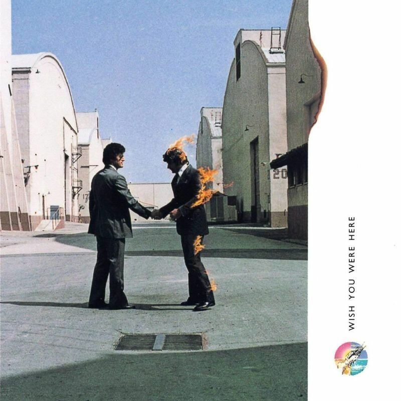

Дискография Pink Floyd
The Piper at the Gates of Dawn (1967)
Список песен:
- Astronomy Domine
- Lucifer Sam
- Matilda Mother
- Flaming
- Pow R. Toc H.
- Take Up Thy Stethoscope and Walk
- Interstellar Overdrive
- The Gnome
- Chapter 24
- Scarecrow
- Bike
The Dark Side of the Moon (1973)
Список песен:
- Speak to Me
- Breathe
- On the Run
- Time
- The Great Gig in the Sky
- Money
- Us and Them
- Any Colour You Like
- Brain Damage
- Eclipse
Wish You Were Here (1975)

Список песен:
- Shine On You Crazy Diamond (Parts I–V)
- Welcome to the Machine
- Have a Cigar
- Wish You Were Here
- Shine On You Crazy Diamond (Parts VI–IX)
Animals (1977)

Список песен:
- Pigs on the Wing (Part 1)
- Dogs
- Pigs (Three Different Ones)
- Sheep
- Pigs on the Wing (Part 2)
The Wall (1979)
Список песен:
- In the Flesh?
- The Thin Ice
- Another Brick in the Wall, Part 1
- Another Brick in the Wall, Part 2
- Mother
- Goodbye Blue Sky
- Comfortably Numb
- Hey You
- Run Like Hell
- Waiting for the Worms